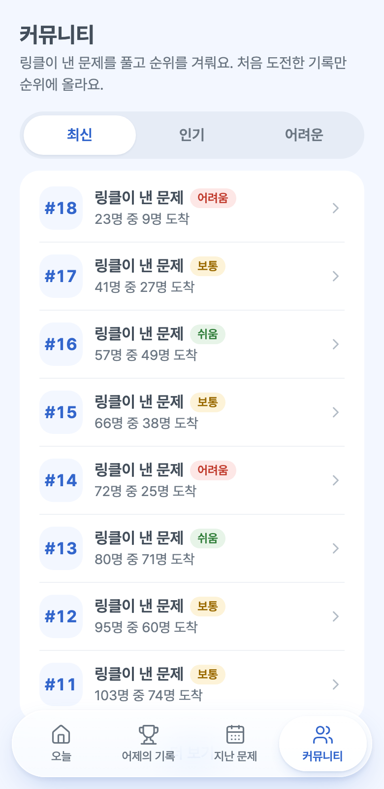
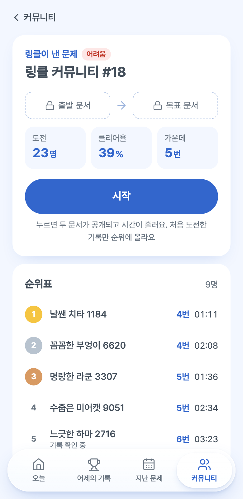
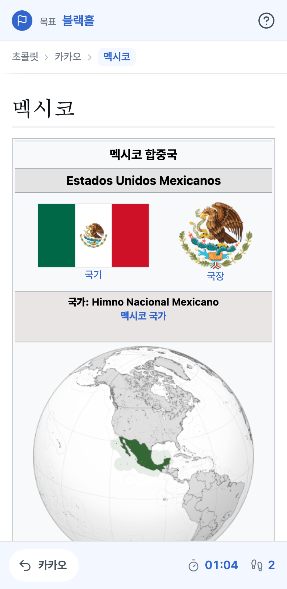
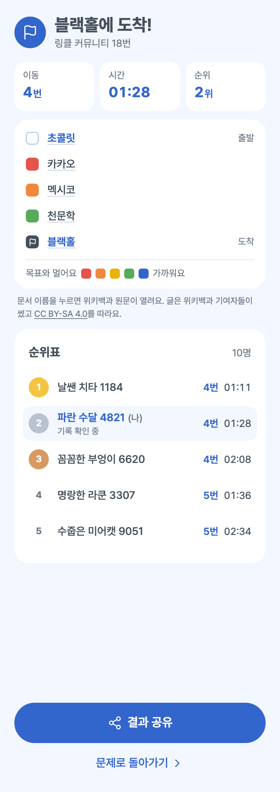

모르는 사람과의 순위보다, 단톡방 친구를 이기는 게 더 재미있어요
링클은 처음부터 "랭킹 대신 지인끼리 공유로 겨룬다"를 원칙으로 삼았어요. 지금 커뮤니티는 모르는 사람과 겨루는 순위표뿐이에요. 이 시안은 도전장(따로, 아무 때나)과 같이 달리기(동시에 출발)를 커뮤니티 탭 안에 넣고, 사용자 출제를 "친구에게 내기"로 먼저 여는 화면을 그려요. 화면은 지금 앱의 실측 값으로 만든 키트로 그렸어요. 아직 구현 전이고, 화면 속 이름과 숫자는 예시예요.
도착하면 "도전장 보내기"
커뮤니티와 지난 문제의 "결과 공유"가 도전장이 돼요. 받은 친구는 내 진행을 고스트로 보며 풀고, 같은 링크로 푼 사람끼리 작은 순위표가 생겨요.
방 하나에 2~8명, 같은 순간 출발
코드·QR·링크로 모이고, 룰렛으로 문제를 뽑고, 레이스 바로 서로의 이동 수와 색을 보며 달려요.
16.7에서 정한 네 가지
승부 방식은 방장이 골라요(기본: 먼저 도착). 친구의 색은 보이고 내 색은 숨겨요. 먼저 도착 방식은 첫 도착에서 판이 끝나요. 오늘의 문제 도전장은 1차에서 빼요.
지금은 공유 문구를 단톡방에 붙여 넣고, 각자 풀고, 숫자만 견줘요
지금 앱(main 3483ed5)을 가짜 API로 띄워 찍었어요. 새 기능은 아래 네 화면 위에 얹혀요. 친구와 겨룰 장치가 따로 없어서, 사람들은 이모지 공유 문구를 단톡방에 붙여 넣고 같은 문제를 각자 풀어 숫자만 비교해요.

12
34
56
78- 여기에 "친구와 달리기" 카드가 들어와요. 목록 맨 위, 제목 바로 아래예요. 지금 커뮤니티에는 친구를 부를 길이 없어요. screens/Community.tsx — ListPage
- 설명 문구가 바뀌어요. 지금은 "링클이 낸 문제를 풀고 순위를 겨뤄요"뿐이라 커뮤니티가 모르는 사람과의 순위표로만 읽혀요. Community.tsx — desc
- 도전장 카드는 이 문제 카드의 모양을 그대로 써요. 잠긴 두 칸, 숫자 타일, 시작 단추, 아래 한 줄 안내가 같아요. screens/Puzzle.tsx — Intro · ui/cards.tsx — Route
- 도전장 순위는 이 순위표 카드를 다시 써요. 기준만 "시간 먼저"로 바뀌어요. ui/Board.tsx — BoardCard
- 고스트 줄과 레이스 바는 머리 바로 아래에 들어가요. 머리와 바닥은 어떤 상황에서도 함께 보여야 해서, 둘 사이의 한 줄만 늘려요. screens/Game.tsx — header · TRAIL
- 바닥은 그대로 둬요. 되돌아가기와 시간, 이동 수가 이미 엄지 자리에 있어요. 반응 단추는 바닥이 아니라 레이스 바 끝에 둬요. Game.tsx — footer
- "결과 공유"가 "도전장 보내기"가 돼요. 공유 문구에 이 문제로 겨루는 링크가 붙어요. 오늘의 문제는 그대로예요(16.7). screens/Arrival.tsx — Cta · ui/share.ts
- 순위표 아래에 도전장 순위와 두 길 견주기가 붙어요. 도착 화면이 children으로 카드를 받는 구조라 자리가 이미 있어요. Arrival.tsx — children
지금의 우회 경로
이미 있는 것 / 새로 필요한 것
| 이미 있음 | 위치 |
|---|---|
| 문제 카드, 잠긴 두 칸, 숫자 타일 | Puzzle.tsx, ui/cards.tsx |
| 순위표 카드, 자동 닉네임 | ui/Board.tsx, core/nickname.ts |
| 이동 로그, 유사도 칸, 도착 화면 틀 | core/run.ts, Arrival.tsx |
| 위키 문서 검색 입력 | ui/WikiSearch.tsx (13장) |
| 새로 필요 | |
| 도전장 코드와 순위 | D1 challenges, runs.challenge |
| 방(실시간) | Worker에 Durable Object Room |
| 랜덤 풀, 룰렛 미끼 제목 | puzzles.kind='random', 정적 JSON |
친구와 겨루기를 어디에 둘지가 갈림길이에요
둘 다 만든다는 것은 정해졌어요(16장). 남은 것은 자리예요. 셋을 그려 봤고, A를 추천해요. 1차는 A의 도전장부터, 다음에 A의 같이 달리기를 열어요.
커뮤니티 맨 위 카드 + 도착 화면의 도전장
핵심 한 수 · 커뮤니티 탭 → 방 만들기 / 도착 화면 → 도전장 → 단톡방
좋은 점
- 아래 탭이 그대로 네 개예요
- 도전장은 이미 쓰는 "결과 공유" 자리에 들어가 새로 배울 것이 없어요
- 받은 도전장이 커뮤니티에 모여 다시 찾기 쉬워요
대가
- 커뮤니티 탭이 "공개 순위"와 "친구" 두 가지 일을 해요
- 오늘의 문제만 하는 사람은 같이 달리기를 늦게 발견해요
선례 · Lichess 친구에게 도전 · Wordle 공유 · The Wiki Game 그룹
아래 탭을 다섯 개로, 친구 일을 한곳에
핵심 한 수 · "친구" 탭 하나에 방, 도전장, 내 문제가 다 있어요
좋은 점
- 친구 기능이 가장 잘 보여요
- 커뮤니티 탭은 공개 순위만 남아 뜻이 또렷해요
대가
- 아래 탭 다섯 칸은 320px 폭에서 글자가 잘려요(지금 탭 CSS가 네 칸 기준)
- "지인끼리"가 하루 한 번 게임보다 커 보여 정체성이 흐려져요
선례 · Duolingo Friends Quests(친구 일을 한 모듈에). 데일리 단어 게임에서 친구 탭을 둔 곳은 찾지 못했어요
도착 화면에서만 도전장과 방이 생겨요
핵심 한 수 · 풀어 본 문제만 친구에게 건네요. 따로 찾아갈 곳이 없어요
좋은 점
- 화면을 거의 늘리지 않아요
- "내가 해 본 문제"라 고르는 고민이 없어요
대가
- 방장이 이미 답을 알아서 같이 달리기가 성립하지 않아요
- 랜덤 룰렛이 들어갈 자리가 없어요
선례 · Wordle 공유 · Zwift HoloReplay(끝낸 기록이 다음 사람의 고스트)
도전장은 도착 화면에서, 같이 달리기는 커뮤니티에서 시작해 서로 이어져요
세 갈래 모두 같은 게임 화면과 도착 화면을 지나요. 내가 낸 문제는 도전장이나 방으로 흘러 들어가고, 방에서 푼 문제는 다시 도전장이 돼요. 뒤의 화면 장은 이 마디들을 하나씩 키운 거예요.
커뮤니티 맨 위에 방 만들기, 도착 화면에는 도전장 보내기
지금 커뮤니티는 정렬과 목록뿐이고, 도착 화면의 주 단추는 "결과 공유"예요. 커뮤니티 맨 위에 친구와 달리기 카드와 받은 도전장을 두고, 커뮤니티와 지난 문제의 도착 화면에서는 "결과 공유"를 "도전장 보내기"로 바꿔요. 화면마다 주 단추는 여전히 하나예요.
지금 · 커뮤니티
시안 · 커뮤니티
- 펭도전하기펭귄님의 도전장커뮤니티 #16, 3번 01:12
- #18링클이 낸 문제어려움23명 중 9명 도착
- #17링클이 낸 문제보통41명 중 27명 도착
- 친구와 달리기 카드가 목록보다 먼저 와요. 흰 카드 하나에 이름, 한 줄 설명, 주 단추를 넣었어요. 새 컴포넌트 없이 Card · Badge · Cta · TextButton으로 그려요.
- 누르면 바로 방이 생겨요. 만들기와 들어가기를 고르게 하지 않아요(usagi 같이 하기와 같아요). 들어가기는 아래 글자 단추 "코드로 들어가기"예요.
- 받은 도전장은 아직 안 푼 것만 보여요. 링크를 단톡방에서 놓쳐도 여기서 다시 찾아요. 이 기기에 남은 기록으로 알아요. 그 아래 정렬과 링클이 낸 문제 목록은 그대로예요.
지금 · 도착
시안 · 도착 (커뮤니티, 지난 문제)
- 이동
- 4번
- 시간
- 01:28
- 순위
- 2위
- 초콜릿출발
- 카카오
- 멕시코
- 천문학
- 블랙홀도착
목표와 멀어요 가까워요
문서 이름을 누르면 위키백과 원문이 열려요. 글은 위키백과 기여자들이 썼고 CC BY-SA 4.0을 따라요.
순위표
10명- 1날쌘 치타 11844번01:11
- 2파란 수달 4821(나)4번01:28
- 3꼼꼼한 부엉이 66204번02:08
- "결과 공유"가 "도전장 보내기"가 돼요. 공유 문구(제목, 점수, 이모지)는 그대로고 첫 줄이 "도전장"으로, 주소가
/c/코드로 바뀌어요. 두 단추를 나란히 두지 않아요. - 무엇이 가는지 한 줄로 말해요. 스포일러가 없다는 것을 보내는 사람이 알고 누르게 해요.
받은 사람은 친구의 기록을 보고 시작해서, 친구의 그림자와 함께 달려요
도전장 카드는 문제 카드와 같은 모양이에요. 문서는 잠겨 있고, 보낸 사람의 시간과 색 칸이 보여요. 게임 중에는 머리 아래 한 줄이 "같은 시각에 친구는 몇 번째였나"를 알려 주고, 도착하면 두 길이 어디서 갈렸는지 나란히 보여요.
③ 도전장 카드
도전장을 보냈어요
이 도전장 순위
3명- 1다정한 고래 514800:583번
- 2졸린 펭귄 2093보낸 사람01:123번
- 3엉뚱한 여우 731002:405번
- 제목이 사람이에요. "커뮤니티 #16"보다 "펭귄님이 보냈어요"가 누르게 만들어요. 번호는 오른쪽 위로 내렸어요.
- 문서는 시작을 누르기 전까지 잠겨요. 미리 보이면 길을 찾아 두고 시작할 수 있어요(12.2).
- 이길 목표를 먼저 보여 줘요. 보낸 사람의 시간, 이동 수, 색 칸. 문서 이름이 없어 스포일러가 아니에요.
- 고스트가 있다는 것을 미리 알려요. 처음 보는 사람이 위의 줄을 오류로 오해하지 않게요.
- 같은 링크로 푼 사람끼리의 순위예요. 시간 먼저, 이동 수는 옆에. 보낸 사람에게 "보낸 사람" 꼬리표.
④ 고스트와 풀기
목표산업 혁명
중국
중화인민공화국은 동아시아에 있는 나라로, 수도는 베이징이다. 인구가 세계에서 손꼽히게 많고, 황허강과 양쯔강 유역에서 일찍부터 문명이 일어났다.
근대에 들어 아편 전쟁을 거치며 영국을 비롯한 서양 열강과 맞닥뜨렸고, 19세기 후반에는 서양의 산업화를 따라잡으려는 양무운동이 이어졌다.
오늘날에는 제조업과 무역의 비중이 큰 경제 대국이며, 국제 연합 안전 보장 이사회의 상임 이사국이다.
판다는 중국 쓰촨 지방의 산지에 주로 사는 곰과 동물로, 나라를 상징하는 동물로 널리 알려져 있다.
- 고스트 줄은 머리 바로 아래 한 줄(40)이에요. 같은 경과 시간에 보낸 사람이 몇 번째 이동이었는지와 그 문서의 색. 내 색은 여전히 안 보여요. 누르면 접혀요.
- 바닥은 지금과 같아요. 시간과 이동 수를 고스트와 견주는 것은 보는 사람의 몫이에요. 보낸 사람이 도착한 시각이 지나면 고스트 줄이 "펭귄님은 01:12에 도착했어요"로 바뀌어요.
⑤ 나란히 견주기
두 길
2번째에서 갈렸어요- 판다
- 중국
- 판다
- 중국
- 영국
- 산업 혁명
- 아편 전쟁
- 산업 혁명
이 도전장 순위
4명- 1파란 수달 4821(나)00:513번
- 2다정한 고래 514800:583번
- 3졸린 펭귄 2093보낸 사람01:123번
- 숫자 세 칸 대신 나와 친구 두 칸. 이긴 쪽에 파란 테두리와 "이겼어요". 도전장의 기준은 시간이에요.
- 두 길을 갈린 곳에서 끊어 보여요. 함께 지난 문서는 옅은 파랑, 갈린 뒤는 각자. 둘 다 끝냈으니 문서 이름을 보여 줘요.
- 같은 링크의 순위에서 내 줄이 보여요. 내가 1위가 되면 맨 위에 있어요.
- 주 단추는 "나도 도전장 보내기". 내 판으로 새 도전장을 만들어 되받아쳐요.
대기실 한 화면에서 부르고, 고르고, 출발해요
usagi 배구의 같이 하기처럼 방 카드에 코드, QR, 보내기, 찍기를 모았어요. 자리는 두 줄로 놓아 8명까지 한 화면에 들어오고, 문제, 승부, 시간은 설정 세 줄로 방장만 바꿔요. 혼자 기다리는 첫 상태와, 링크로 들어온 사람이 보는 참가 확인도 그렸어요.
⑧ 대기실 (4명)
같이 달릴 사람
4명, 최대 8명- 코드 네 자리가 가장 커요. 헷갈리는 0·O·1·I·L을 뺀 31글자(usagi와 같음). 누르면 초대 링크가 복사돼요.
- 찍기는 옆에 있는 친구용이에요. 둘 다 방을 만들어 버렸을 때 한 명이 상대 QR을 찍어 그 방으로 옮겨요.
- 자리는 두 줄 칸이에요. 방장은 왕관, 준비는 파란 글자, 기다리는 사람은 회색. 8명이면 네 줄이에요.
- 반응은 자리 위에 잠깐 떠요. 정해진 여섯 개뿐이고 글은 쓸 수 없어요.
- 설정은 세 줄. 문제(랜덤, 커뮤니티, 지난 문제, 내가 낸 문제), 승부(먼저 도착 / 적은 이동), 시간. 방장이 아니면 화살표 없이 읽기만 해요.
- 출발은 방장만, 준비한 사람이 2명 넘으면. 단추에 준비 인원이 보여 기다릴지 말지 정할 수 있어요.
처음 · 혼자 기다리는 중
같이 달릴 사람
1명, 최대 8명- 혼자일 때는 QR이 주인공이에요. 같은 자리에 있는 친구가 바로 찍을 수 있게 크게 둬요.
- 보내기와 찍기를 글자로 풀어 썼어요. 처음 보는 사람도 무엇을 하는 단추인지 알아요.
- 빈 자리는 점선 칸이에요. 출발 단추는 2명이 될 때까지 흐려요.
⑦ 링크로 들어온 사람
시간 10분
방에 있는 사람
3명, 최대 8명- 들어가기 전에 누구의 방인지 보여 줘요. 링크를 잘못 눌렀는지 알 수 있어요(Among Us의 참가 확인).
- 규칙을 미리 한 줄로. 들어간 뒤 놀라지 않게요.
- 이름은 자동이고, 다시 뽑을 수 있어요. 직접 쓰지는 않아요(Kahoot 이름 굴리기와 같은 생각).
문제 고르기 (방장)
무슨 문제로 달릴까요
- 기본은 랜덤, 고를 것은 난이도뿐이에요. 길이 확인된 문제 풀에서 서버가 뽑고, 화면은 룰렛으로 보여 줘요. 쉬움, 보통, 어려움은 오늘의 문제와 같은 기준이에요(7.4).
- 커뮤니티 문제는 순위표에도 올라요. 처음 도전인 사람만요. 먼저 도착 방식에서 멈춘 판도 첫 도전을 쓴 것으로 쳐서, 고르면 대기실에 그 안내가 떠요.
- 내가 낸 문제를 고르면 나는 지켜봐요. 답을 아는 사람이 달리지 않게 하는 자리예요.
룰렛은 연출이고, 모두가 같은 순간에 같은 문서에서 멈춰요
출발과 도착은 서버가 이미 정했어요. 모든 기기가 같은 seed로 같은 릴을 돌리고, 같은 서버 시각에 실제 문서에서 멈춰요. 멈춘 뒤 두 문서의 첫 문장을 보여 주고 3, 2, 1. 그동안 출발 문서를 미리 받아 두어 느린 휴대폰도 손해를 보지 않아요.
출발이 멈추고 도착이 도는 중
- 멈춘 칸은 흰 바탕에 파란 글자. 지나가는 제목은 후보 문서 약 1,400개에서 뽑은 미끼예요.
- 도는 릴은 흐리게. 0.8초 뒤 멈춰요.
- 모두 같은 장면을 본다는 것을 말해 줘요. 아래 동물 표시는 방에 있는 사람들이에요.
둘 다 멈춤
고려 때 만든 푸른빛 자기. 상감 기법으로 무늬를 넣은 것이 많아요
14~16세기 이탈리아에서 시작해 유럽으로 퍼진 문화 운동
- 첫 문장 카드로 처음 듣는 문서도 알게 해요. 위키백과 요약을 브라우저가 직접 받아요. 서버를 부르지 않아요.
- 방장은 한 판에 한 번 다시 돌릴 수 있어요. 카운트다운 중에만 보여요.
3, 2, 1
0이 되면 모두 같은 순간에 시간이 흘러요
- 숫자 하나만 크게. 움직임 줄이기 설정이면 릴 대신 카드 두 장을 뒤집어요.
- 출발과 목표를 한 번 더. 지금 앱의 열린 Route 칸을 흰 바탕으로 썼어요.
- 준비가 끝났다는 것을 말해 줘요. 0이 되는 순간 모두의 시계가 같은 서버 시각에서 흘러요.
레이스 바 한 줄이 "누가 가까워지고 있나"를 말해요
게임 화면은 그대로 두고 머리 아래에 48 높이 한 줄을 더해요. 자리마다 동물 표시, 이동 수, 마지막 문서의 색이에요. 문서 이름은 보이지 않아요. 색은 내가 모르는 문서의 색이라 내 길의 힌트가 되지 않고, 내 색은 지금처럼 숨겨요(16.7).
⑩ 달리는 중 (먼저 도착)
- 레이스 바는 자리 순서로 고정해요. 순위대로 다시 줄 세우면 칸이 계속 흔들려 읽을 수 없어요. 내 칸은 옅은 파랑 바탕에 이동 수만 보여요. 친구 칸의 색이 초록이면 가까워졌다는 뜻이고, 되돌아가면 ⏪ 칸, 다른 탭에 오래 있으면 👀로 흐려져요(실격은 아니에요, 5.2).
- 반응은 끝의 웃는 얼굴 단추로 보내요. 받은 반응은 그 사람 칸 모서리에 잠깐 떠요(펭귄의 😱).
- X는 포기예요. 누르면 확인을 한 번 거쳐요. 포기해도 결과는 같이 봐요.
친구 도착 (적은 이동 방식)
- 적은 이동 방식에서는 도착 알림만 뜨고 계속 달려요. 먼저 도착 방식이면 이 순간 모두 결과 화면으로 넘어가요.
- 반응 고르기는 여섯 칸 팝오버. 👏 😱 🤔 🔥 😭 🐢. 1초에 하나까지예요.
출제자 관전 (내가 낸 문제)
지켜보는 중세종대왕 → 반도체
- 머리가 "지켜보는 중"으로 바뀌어요. 깃발 대신 눈, 파랑 대신 잉크색이라 달리는 화면과 헷갈리지 않아요.
- 출제자에게만 문서 이름이 보여요. 답을 알고 겨루지 않으니 스포일러가 아니에요. 서버는 이 자리에만 이름을 보내요.
- 내 길 위에 친구가 서 있어요. 누가 내 길을 따라오는지 한눈에 봐요.
- 출제자의 바닥은 반응 여섯 칸. 응원하거나 놀릴 수 있어요.
1등은 한 명이지만, 나머지도 "얼마나 가까웠나"로 순서가 생겨요
먼저 도착 방식은 한 명이 도착하는 순간 끝나서(16.7) 2등부터는 도착 순서가 없어요. 그래서 그 순간 각자 있던 문서의 색으로 "가장 가까웠던 순"을 매겨요. 이제 모두 끝났으니 문서 이름도 보여 줘요. 다시 보기는 시간 막대를 끌어 그때 누가 어디 있었는지 봐요(Strava Flyby).
⑪ 결과 (먼저 도착)
먼저 도착
02:31가장 가까웠던 순
그때 있던 문서- 2파란 수달 4821(나)베네치아, 3번째
- 3다정한 고래 5148비단길, 2번째
- 4엉뚱한 여우 7310고려, 5번째
이 방 전적
3판- 이긴 사람 한 줄이 맨 위. 도착 화면과 같은 머리 모양에 깃발 대신 트로피예요.
- 나머지는 마지막 문서의 색 순서. 같은 색이면 이동 수가 적은 쪽이 앞이에요. 그때 있던 문서 이름이 함께 보여요.
- 이 방 전적은 방이 살아 있는 동안만. 전체 순위가 아니에요. 방이 닫히면 사라져요.
- 주 단추는 "한 판 더". 같은 방 대기실로 돌아가요. 길 다시 보기와 결과 공유는 글자 단추.
길 다시 보기
01:30에 있던 곳
함께 지난 문서
- 시간 막대 하나로 모두를 같이 움직여요. 기준은 방의 출발 시각이에요.
- 그 순간 각자 있던 문서와 지나온 색 줄. 네 명의 길을 네 칸으로 나누면 좁은 화면에서 읽을 수 없어서, 사람마다 한 줄로 썼어요.
- 함께 지난 문서를 모아요. "넷 다 도자기를 지났어요"가 결과 화면의 이야깃거리가 돼요.
내가 낸 문제는 먼저 친구들이 풀고, 그다음에 커뮤니티로 가요
사용자 출제(2단계)를 둘로 나눴어요(16.4). 처음에는 링크가 있는 사람만 풀 수 있어서 신고와 검수가 필요 없어요. 출제자가 직접 풀어 도착해야 보낼 수 있고, 친구 5명 이상이 도전하고 도착률이 20% 이상인 문제만 커뮤니티에 올릴 수 있어요.
⑫ 고르기
- 제목 아래에 세 단계를 보여 줘요. 고르기, 직접 풀기, 보내기. 관리자 화면의 "문제 넣기"와 같은 순서예요(7.7).
- 검색 입력은 13장의 것을 그대로 써요. 목록마다 첫 문장이 붙어 같은 이름의 다른 문서를 고르지 않게 해요.
- 직접 풀어야 한다는 것을 미리 말해요. 내 길이 도달할 수 있다는 증명이자 이 문제의 정답 예시가 돼요.
⑭ 내 문제함
- #2세종대왕 → 반도체친구 6명 중 4명 도착, 나보다 짧게 1명
- #1김치 → 알프스산맥친구 3명 중 1명 도착
- 출제자는 자기 문제의 문서 이름을 봐요. 한 줄 설명은 "몇 명 중 몇 명 도착, 나보다 짧게 몇 명".
- 고르면 숫자와 두 갈래 단추가 열려요. 도전장으로 보내거나 이 문제로 방을 열어요.
- 올릴 수 있게 되면 그때만 알려요. 친구들이 먼저 풀어 본 문제만 목록에 올라 풀 수 없는 문제가 목록을 채우지 않아요.
- 주 단추는 "새 문제 내기". 이 기기에만 남는다는 것은 위 설명에 한 번만 적었어요.
막혔을 때도 다음에 할 일을 하나 줘요
방이 찼을 때, 앱 안 브라우저로 열었을 때, 무료 한도에 닿았을 때를 그렸어요. 셋 다 같은 빈 상태 모양(가운데 아이콘, 제목, 두 줄, 아래 주 단추)이에요.
방이 꽉 참
방이 꽉 찼어요
이 방에는 벌써 8명이 있어요.
지켜보기로 들어가면 다음 판부터 자리가 나면 함께 달려요.
- 거절 대신 지켜보기로 받아요. 정원을 넘은 사람을 관전자로 받는 Jackbox 방식이에요. 지켜보는 사람은 달리는 사람과 같은 것(이동 수, 색)만 봐요.
카카오톡 안에서 열림
브라우저에서 열어 주세요
카카오톡 안에서 열면 이 기기의 기록과
이름이 따로 생겨요.
- 왜 바깥 브라우저가 필요한지 한 줄로. 저장소가 따로라 다른 이름이 생겨요. 단추가 안 될 때의 길도 적어요(usagi
inApp.ts의 안내).
오늘 한도에 닿음
오늘은 같이 달리기가 붐벼요
오전 9시에 다시 열려요.
오늘의 문제와 도전장은 그대로 할 수 있어요.
- 되는 것을 권해요. 같이 달리기만 하루 상한을 따로 둬서 오늘의 문제는 영향이 없어요(16.3.8). 도전장은 D1만 써서 계속돼요.
도전장부터 만들어요. 새 서버 구조 없이 친구와 겨루는 재미를 확인할 수 있어요
1차에 넣을 것
- 도착 화면의 도전장 보내기 (커뮤니티, 지난 문제)"결과 공유" 자리를 바꾸는 것이라 새 화면이 거의 없어요
- 도전장 카드, 고스트 줄, 나란히 견주기, 도전장 순위D1 표 하나와 칸 하나로 끝나요
- 커뮤니티 맨 위의 받은 도전장기기에 남은 기록만 읽어요
미룰 것
- 같이 달리기 방 전체Durable Object와 랜덤 풀이 먼저 있어야 해요. 2차(16.6의 2, 3번)
- 친구에게 내기와 내 문제함방의 "내가 낸 문제"와 함께 4번째에
- 오늘의 문제 도전장16.7에서 1차 제외로 정했어요. 도전장을 써 본 뒤 다시 봐요
- 다시 보기 막대결과 화면 뒤에 붙일 수 있어요. 방이 열린 다음에
데이터와 API 초안
| 화면에 필요한 값 | 지금 있나 | 어디서 |
|---|---|---|
| 도전장 카드: 보낸 사람 이름, 시간, 이동 수, 색 칸 | 있음 | runs.duration_ms, moves, emoji, players.name |
| 도전장 코드, 도전한 사람 수 | 새로 | challenges (code, puzzle_id, run_id, player_id, takers) |
| 고스트: 이동마다 경과 시간과 색 | 있음 | runs.events[].at + runs.emoji. 문서 이름은 빼고 보내요 |
| 도전장 순위 | 새로 | runs.challenge + 인덱스 runs_challenge |
| 두 길 견주기 | 있음 | GET /api/challenges/:code가 내 끝난 판이 있을 때만 상대 경로를 줘요 |
| 방: 자리, 준비, 설정, 전적 | 새로 | Durable Object 저장소. 판 진행은 소켓 attachment(16.3.7) |
| 룰렛 미끼 제목 | 새로 | 정적 JSON(후보 문서 약 1,400개의 제목). 요청 한도에 들지 않아요 |
새 토큰 없이 지금 앱의 값으로만 그렸어요
지금 그대로 쓰는 것
| 조각 | 값 · 출처 |
|---|---|
| 카드 | 흰 바탕 · 모서리 20 · 안쪽 20 · Card |
| 주 단추 | 높이 56 · 17/600 · --color-primary · Cta |
| 글자 단추 | 높이 48 · 16/500 · TextButton |
| 줄 | 최소 68 · 제목 16/22 600 · 설명 14/20 · ListRow |
| 꼬리표 | 44 · 모서리 14 · Badge |
| 유사도 칸 | 18 · 모서리 5 · --color-s1~s5 · Sq |
| 게임 머리 · 바닥 | 56 · 64 · --color-secondary · Game.tsx |
새로 필요한 조각
| 조각 | 값 · 이유 |
|---|---|
| 동물 표시 | 32 원 · 옅은 파랑 바탕 · 나는 채운 파랑. 사람을 색으로 나누면 유사도 색과 섞여요 |
| 레이스 바 | 높이 48 · 칸 36 · 모서리 12. 머리와 지나온 길 사이 |
| 고스트 줄 | 높이 40 · 지나온 길 줄(44)보다 낮게, 문서를 덜 가리게 |
| 자리 칸 | 56 · 모서리 14 · 두 줄 격자. StatTile의 옅은 파랑 바탕을 따름 |
| 방 코드 | 34/40 · 800 · 자간 .16em. 멀리서 읽어 불러 줄 수 있게 |
| 공개 화면 | 주 색 바탕 전면. 게임 밖의 "장면"이라 도착 축하 화면(Streak)과 같은 무게 |
| 아래 시트 | 모서리 24 · 손잡이 36×5. 지금 앱에는 시트가 없어 새로 필요 |
구현할 때 지킬 것
화면 말 대응표
내부 이름은 화면에 쓰지 않아요.
| 내부 말 | 화면 |
|---|---|
| challenge | 도전장 |
| room, Durable Object | 방, 같이 달리기 |
| seat, token | 자리 (토큰은 화면에 없음) |
| host | 방장 |
| ready | 준비 |
| ghost | (이름 없음) "이 시간엔 n번째" |
| win: first / fewest | 먼저 도착하면 이겨요 / 적게 이동하면 이겨요 |
| spectator | 지켜보기 |
| unlisted | 친구에게 내기 (링크가 있는 사람만) |
| run | 판, 기록 |
규칙
참고한 제품과 문서
모이기와 방
- The Wiki Game · 홈과 진행 중인 판 (2026-11 직접 봄) — 판 사이 카운트다운, "이름(이동 수)" 진행 목록, 색+동물+숫자 자동 이름. 로그인 유도 배너는 가져오지 않아요
- Kahoot! join (2026-11) · 닉네임 생성기 (2017-11) — 코드·링크·QR 세 길, 이름 다시 굴리기, 호스트가 고르는 승리 규칙(Accuracy mode). 문제마다 순위 화면은 빼요
- Jackbox · How to Play — 첫 입장자가 방장, 정원을 넘으면 관전자로 받기
- Among Us Update 16.0.0 (2025-03) · Quick Chat (2023-07) — 코드 입력 뒤 방장·인원·규칙 확인 화면, 정해진 문구만 보내는 패널. 공개 방 찾기는 빼요
- usagi-volleyball 같이 하기 (사내,
docs/protocol.md) — 누르면 바로 방, 4자리 코드 알파벳, QR 찍어 옮기기, 좌석 토큰 재접속, 앱 안 브라우저 안내
고스트와 견주기
- Lichess · 친구에게 도전 (2026-11 직접 봄) — 링크와 QR을 함께 주는 대기 화면, 끝난 뒤 다시 하기. "처음 온 1명만"은 가져오지 않아요
- Strava Flyby — 같은 시각의 위치를 나란히, 시간 막대로 아무 지점이나 보기 → 길 다시 보기
- Zwift HoloReplay (2022-10) — 반투명 고스트에 꼬리표를 붙여 나와 구분 → 고스트 줄. 3D 아바타는 빼요
- Duolingo Friend Streak (2024-09) · Friends Quests (2022-09) — 앱이 써 둔 문구만 보내기, 화면 배치로 정원 정하기, 첫 초대가 가장 큰 벽
- Wordle 공유 (2차, GDC 2022 강연 보도) — 글자 없이 색만 남겨 남의 판을 망치지 않기. 링클이 이미 지키는 원칙
도전장 → 랜덤 풀 → 방 → 친구에게 내기 순서로 올려요
나눠 올릴 순서
challenges, runs.challenge, 고스트 응답. 화면은 바뀌지 않아요./c/:code 카드, 고스트 줄, 견주기, 커뮤니티의 받은 도전장. 오늘의 문제 화면은 그대로예요.--pool random, 채우기 기준, 미끼 제목 JSON.Room, 메시지 검사를 packages/core/room.ts에. 화면 없이 스모크 테스트로.